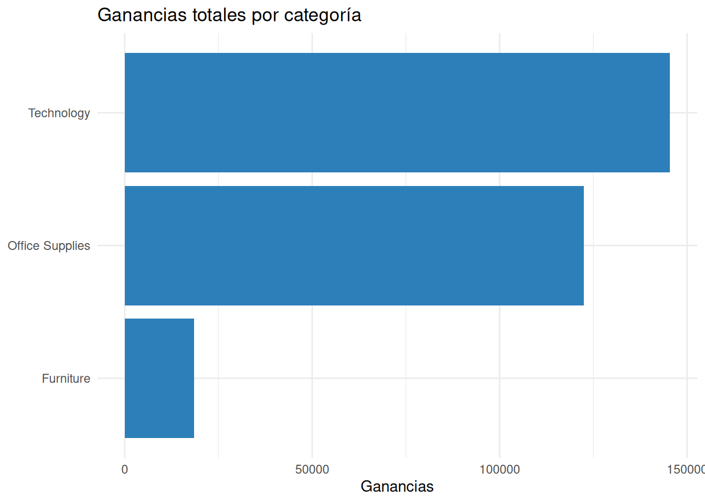
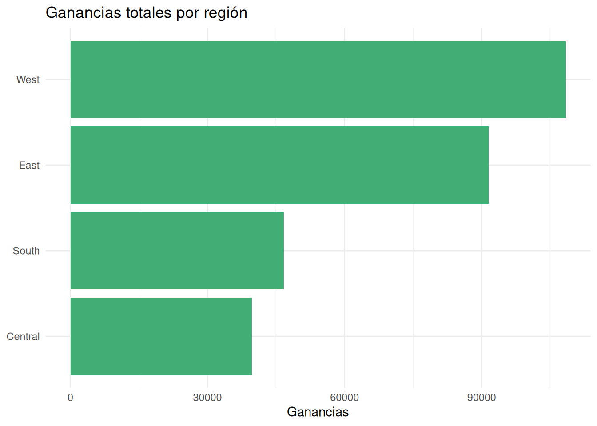

¿Dónde genera realmente dinero la empresa?
Retail
Visualización
Descubra por qué vender más no siempre significa ganar más y cómo identificar las áreas que realmente crean valor utilizando datos de Superstore.
¿Por qué esta pregunta importa?
Uno de los errores más frecuentes en la gestión empresarial consiste en asumir que las áreas con mayores ventas son automáticamente las más exitosas.
Sin embargo, las ventas representan únicamente el dinero que entra por la actividad comercial. La verdadera creación de valor depende de otro indicador: la utilidad obtenida después de cubrir los costos.
Esta diferencia parece sencilla, pero tiene profundas implicaciones para la toma de decisiones. Una línea de productos puede vender millones de dólares y, aun así, aportar muy poco al crecimiento del negocio si sus márgenes son reducidos.
Por ello, antes de pensar en modelos predictivos o análisis más avanzados, conviene responder una pregunta mucho más básica:
¿Dónde está generando realmente dinero la empresa?
En este artículo utilizaremos el conjunto de datos Superstore Sales para explorar esta cuestión desde una perspectiva completamente descriptiva. Nuestro objetivo no será construir modelos estadísticos, sino desarrollar intuición empresarial utilizando evidencia proveniente de los datos.
Al finalizar el análisis veremos que las ventas cuentan solamente una parte de la historia y que la rentabilidad ofrece una visión mucho más cercana al verdadero desempeño del negocio.
1. La pregunta de negocio
Toda esta entrada gira alrededor de una única pregunta:
¿Las áreas con mayores ventas son también las más rentables?
Responderla correctamente resulta importante porque muchas decisiones empresariales se toman utilizando únicamente indicadores de ventas.
Es habitual encontrar informes donde se destacan las categorías o regiones que más venden. Sin embargo, desde la perspectiva de la dirección, una pregunta suele ser aún más relevante:
¿Qué áreas están generando realmente valor para la organización?
Para responderla utilizaremos dos indicadores presentes en el conjunto de datos:
- Sales, que representa el valor de las ventas realizadas.
- Profit, que representa la utilidad obtenida en cada transacción.
Aunque ambos indicadores suelen estar relacionados, no siempre evolucionan de la misma manera.
Precisamente esa diferencia constituye el eje de nuestro análisis.
2. Comprendiendo el problema
Imaginemos dos categorías de productos.
La primera vende un millón de dólares y obtiene cien mil dólares de utilidad.
La segunda vende setecientos mil dólares, pero genera ciento cincuenta mil dólares de beneficio.
Si únicamente observamos las ventas, parecería evidente que la primera categoría es la más importante.
Sin embargo, desde la perspectiva del negocio, la segunda está creando más valor.
Esta situación ocurre con mucha frecuencia.
Descuentos agresivos, promociones, costos logísticos o diferencias entre productos pueden hacer que dos áreas con niveles similares de ventas tengan desempeños económicos completamente distintos.
Por ello, un analista no debería limitarse a preguntar cuánto vende cada área.
También necesita comprender cuánto beneficio generan esas ventas.
Esa será precisamente la lógica que seguiremos durante todo el artículo.
Comenzaremos explorando la relación entre ventas y ganancias de cada transacción y, posteriormente, resumiremos esa información por categorías y regiones.
3. Explorando los datos
¿Existe una relación clara entre ventas y ganancias?
Antes de resumir la información por categorías o regiones, conviene observar cada transacción de manera individual.
El siguiente gráfico muestra simultáneamente el valor de las ventas y la utilidad obtenida en cada operación.
Para facilitar la interpretación hemos limitado el eje vertical a un rango entre −1000 y 1000 unidades monetarias. La gran mayoría de las transacciones se encuentra dentro de este intervalo, lo que permite apreciar mejor el patrón general sin que unos pocos valores extremos dominen la visualización.
El gráfico muestra una elevada concentración de transacciones con ganancias comprendidas aproximadamente entre −500 y 500 unidades monetarias.
A medida que aumentan las ventas también aumenta la dispersión de las ganancias. Algunas operaciones generan beneficios elevados, mientras que otras producen pérdidas importantes.
Esta variabilidad transmite una idea fundamental: una venta de gran magnitud no garantiza una ganancia elevada.
Incluso entre transacciones con niveles similares de ventas encontramos resultados económicos muy diferentes.
Desde la perspectiva empresarial, esta es una primera señal de que el volumen de ventas, por sí solo, no basta para evaluar el desempeño del negocio.
¿Qué categorías generan realmente valor?
Una vez comprendido el comportamiento de las transacciones individuales, resulta más útil resumir la información por categoría.

El gráfico muestra una diferencia muy marcada entre las tres categorías.
Technology genera la mayor utilidad del conjunto de datos, seguida muy de cerca por Office Supplies.
En contraste, Furniture aporta una utilidad considerablemente menor, a pesar de mantener un volumen de ventas comparable al de las otras categorías.
Para comprender mejor esta diferencia, resumimos los principales indicadores en la siguiente tabla.
| Category | Ventas | Ganancias | Margen (%) |
|---|---|---|---|
| Furniture | $741,999.80 | $18,451.27 | 2.49 |
| Office Supplies | $719,047.03 | $122,490.80 | 17.04 |
| Technology | $836,154.03 | $145,454.95 | 17.40 |
La tabla confirma una de las conclusiones más importantes del artículo.
Aunque Furniture vende casi tanto como Office Supplies, su margen de ganancia alcanza apenas 2.49 %, muy por debajo del 17.0 % observado en Office Supplies y del 17.4 % registrado por Technology.
Esta diferencia ilustra perfectamente la idea central del análisis.
Las ventas reflejan la actividad comercial.
La rentabilidad revela cuánto valor económico termina generando esa actividad.
¿Ocurre lo mismo entre regiones?
Las diferencias observadas entre categorías plantean una nueva pregunta.
¿La relación entre ventas y rentabilidad también cambia cuando analizamos distintas regiones?
Responder esta pregunta resulta importante porque muchas decisiones comerciales —como la asignación de presupuestos, campañas de marketing o expansión territorial— suelen apoyarse en indicadores agregados de ventas.
Sin embargo, si dos regiones presentan niveles similares de actividad comercial pero generan beneficios diferentes, la estrategia de negocio también debería ser diferente.
Para explorar esta posibilidad resumimos nuevamente la información, esta vez por región.

La distribución de las ganancias muestra nuevamente que el volumen de ventas no cuenta toda la historia.
La región West obtiene la mayor utilidad total, seguida por East.
Por el contrario, Central presenta la menor utilidad entre las cuatro regiones analizadas.
La diferencia resulta todavía más interesante cuando incorporamos las ventas y el margen de rentabilidad.
| Region | Ventas | Ganancias | Margen (%) |
|---|---|---|---|
| Central | $501,239.89 | $39,706.36 | 7.92 |
| East | $678,781.24 | $91,522.78 | 13.48 |
| South | $391,721.91 | $46,749.43 | 11.93 |
| West | $725,457.82 | $108,418.45 | 14.94 |
La tabla revela un resultado especialmente ilustrativo.
La región Central registra ventas superiores a las de South. Sin embargo, genera una utilidad menor y alcanza un margen de apenas 7.92 %, frente al 11.9 % observado en South.
Esta comparación resume perfectamente la idea central del artículo.
Si únicamente analizáramos las ventas, podríamos concluir que Central presenta un mejor desempeño comercial.
Sin embargo, al incorporar la utilidad descubrimos que South convierte una menor cantidad de ventas en un mayor beneficio para la empresa.
En otras palabras, vender más no siempre significa generar más valor.
4. Interpretando los resultados
Volvamos ahora a la pregunta que dio origen al análisis.
¿Las áreas con mayores ventas son también las más rentables?
La evidencia obtenida sugiere que la respuesta es no necesariamente.
Las categorías y regiones con mayor actividad comercial no siempre son las que generan un mayor beneficio económico.
El caso de Furniture constituye un ejemplo claro. A pesar de registrar un volumen de ventas similar al de las demás categorías, su margen de ganancia es considerablemente inferior.
Algo parecido ocurre cuando analizamos las regiones. Central supera a South en ventas, pero obtiene una utilidad menor y un margen significativamente más reducido.
Estos resultados muestran que las ventas representan solamente una dimensión del desempeño empresarial.
Para comprender dónde se crea realmente valor es indispensable incorporar indicadores de rentabilidad.
Naturalmente, este análisis no permite identificar las causas de esas diferencias.
Los menores márgenes podrían estar relacionados con descuentos más agresivos, costos logísticos elevados, una mezcla distinta de productos o cualquier otro factor operativo que no hemos estudiado en esta entrada.
Sin embargo, sí proporciona una señal clara sobre dónde conviene dirigir futuras investigaciones.
5. Recomendaciones para el negocio
Aunque este análisis es exclusivamente descriptivo, permite identificar varias acciones que un equipo de Business Analytics podría considerar.
En primer lugar, las categorías con márgenes reducidos deberían convertirse en una prioridad para análisis posteriores.
En este conjunto de datos, Furniture representa un caso especialmente interesante. Su volumen de ventas demuestra que existe demanda, pero su bajo margen sugiere que parte de ese esfuerzo comercial no se está transformando en beneficio para la empresa.
Una segunda recomendación consiste en complementar los informes comerciales tradicionales.
Presentar únicamente las ventas puede conducir a conclusiones incompletas. Incorporar indicadores de utilidad y margen ofrece una visión mucho más cercana al verdadero desempeño del negocio.
Finalmente, las diferencias observadas entre regiones justifican investigar con mayor profundidad qué prácticas comerciales, políticas de precios o estructuras de costos podrían explicar los mejores resultados obtenidos en West y East, así como el menor desempeño relativo de Central.
En todos los casos, el objetivo no consiste simplemente en vender más.
El verdadero desafío consiste en convertir las ventas en valor para la organización.
6. Reflexión bayesiana
En esta ocasión no utilizamos ningún modelo bayesiano.
Y, precisamente por eso, este análisis resulta tan importante.
Existe la tentación de pensar que Business Analytics comienza cuando construimos un modelo estadístico. En realidad, comienza mucho antes: cuando aprendemos a formular una buena pregunta y a comprender el contexto del negocio.
En este artículo utilizamos únicamente herramientas descriptivas para responder una cuestión fundamental: ¿las áreas con mayores ventas son también las más rentables?
La evidencia mostró que no necesariamente.
Las diferencias observadas entre categorías y regiones ilustran que el volumen de ventas constituye solo una parte de la historia. Para entender dónde se crea realmente valor es imprescindible incorporar medidas de rentabilidad.
Esta forma de razonar también refleja el espíritu del enfoque bayesiano.
Antes de estimar probabilidades o construir modelos predictivos, necesitamos comprender el problema, reconocer la incertidumbre y decidir qué preguntas merece la pena responder.
Los modelos bayesianos no sustituyen este proceso.
Lo enriquecen.
Y cuanto mejor entendamos el negocio, más útiles serán los modelos que construiremos en el futuro.
Apéndice — Código completo
El siguiente apéndice reúne todo el código utilizado durante el análisis en el mismo orden en que fue desarrollado a lo largo del artículo.
Los bloques utilizan eval: false para evitar una segunda ejecución durante el renderizado y facilitar que el lector pueda reutilizar el análisis completo.
Cargar librerías y datos
library(tidyverse)
library(gt)
superstore <- read_csv(
"data/superstore_sales.csv",
show_col_types = FALSE
)Ventas y ganancias por transacción
ggplot(
superstore,
aes(
x = Sales,
y = Profit
)
) +
geom_point(
alpha = 0.45,
color = "#2C7FB8"
) +
geom_hline(
yintercept = 0,
linetype = "dashed",
color = "firebrick"
) +
coord_cartesian(
ylim = c(-1000, 1000)
) +
labs(
title = "Ventas y ganancias por transacción",
x = "Ventas",
y = "Ganancias"
) +
theme_minimal()Resumen por categoría
profit_category <-
superstore %>%
group_by(Category) %>%
summarise(
Sales = sum(Sales, na.rm = TRUE),
Profit = sum(Profit, na.rm = TRUE),
Margin = 100 * Profit / Sales,
.groups = "drop"
)Ganancias por categoría
ggplot(
profit_category,
aes(
x = reorder(Category, Profit),
y = Profit
)
) +
geom_col(fill = "#2C7FB8") +
coord_flip() +
labs(
title = "Ganancias totales por categoría",
x = NULL,
y = "Ganancias"
) +
theme_minimal()Tabla resumen por categoría
profit_category %>%
mutate(
Margin = round(Margin, 2)
) %>%
gt() %>%
fmt_currency(
columns = c(Sales, Profit)
) %>%
fmt_number(
columns = Margin,
decimals = 2
) %>%
cols_label(
Sales = "Ventas",
Profit = "Ganancias",
Margin = "Margen (%)"
)Resumen por región
profit_region <-
superstore %>%
group_by(Region) %>%
summarise(
Sales = sum(Sales, na.rm = TRUE),
Profit = sum(Profit, na.rm = TRUE),
Margin = 100 * Profit / Sales,
.groups = "drop"
)Ganancias por región
ggplot(
profit_region,
aes(
x = reorder(Region, Profit),
y = Profit
)
) +
geom_col(fill = "#41AE76") +
coord_flip() +
labs(
title = "Ganancias totales por región",
x = NULL,
y = "Ganancias"
) +
theme_minimal()Tabla resumen por región
profit_region %>%
mutate(
Margin = round(Margin, 2)
) %>%
gt() %>%
fmt_currency(
columns = c(Sales, Profit)
) %>%
fmt_number(
columns = Margin,
decimals = 2
) %>%
cols_label(
Sales = "Ventas",
Profit = "Ganancias",
Margin = "Margen (%)"
)